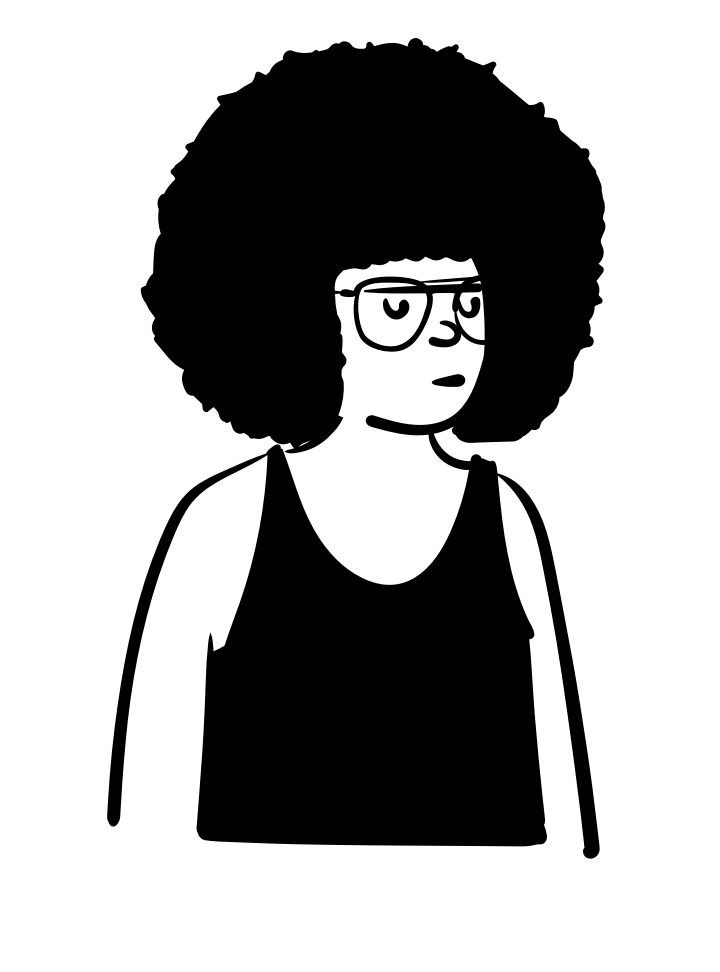
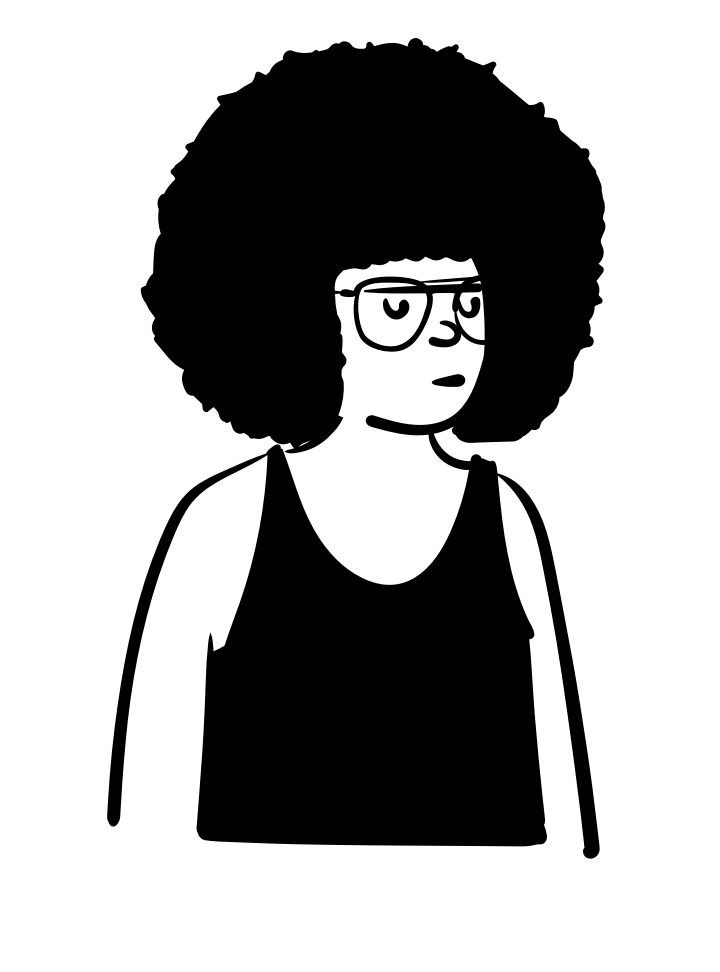

The economics of inequality
Introduction
October 14, 2022
Course info

- Matthias Schnetzer
- Vienna Chamber of Labour & WU Vienna
- mschnetz@wu.ac.at
- https://mschnetzer.github.io
- matschnetzer
- Oct 14, 2022 – Jan 20, 2023
- 10:00–12:00
- TC.3.10
- https://mschnetzer.github.io/econpol
Who are you?

 

What do you already know about inequality and what do you expect of this course?
Bibliography
Adermon, Adrian/Lindahl, Mikael/Waldenström, Daniel (2018). Intergenerational wealth mobility and the role of inheritance: Evidence from multiple generations. The Economic Journal, 128(612), F482–F513. DOI: 10.1111/ecoj.12535
Ahrens, Leo (2022). Unfair inequality and the demand for redistribution: Why not all inequality is equal. Socio-Economic Review, 20(2), 463–487. DOI: 10.1093/ser/mwaa051
Alesina, Alberto/Stantcheva, Stefanie/Teso, Edoardo (2018). Intergenerational mobility and preferences for redistribution. American Economic Review, 108(2), 521–554. DOI: 10.1257/aer.20162015
Alpino, Matteo/Asatryan, Zareh/Blesse, Sebastian/Wehrhöfer, Nils (2022). Austerity and distributional policy. Journal of Monetary Economics. DOI: 10.1016/j.jmoneco.2022.07.006
Alstadsæter, Annette/Johannesen, Niels/Zucman, Gabriel (2019). Tax evasion and inequality. American Economic Review, 109(6), 2073–2103. DOI: 10.1257/aer.20172043
Alvaredo, Facundo/Atkinson, Anthony B./Piketty, Thomas/Saez, Emmanuel (2013). The top 1 percent in international and historical perspective. Journal of Economic Perspectives, 27(3), 3–20. DOI: 10.1257/jep.27.3.3
Alvaredo, Facundo/Garbinti, Bertrand/Piketty, Thomas (2017). On the share of inheritance in aggregate wealth: Europe and the USA, 1900-2010. Economica, 84(334), 239–260. DOI: 10.1111/ecca.12233
Atkinson, A. B. (2014). After piketty? The British Journal of Sociology, 65(4), 619–638. DOI: 10.1111/1468-4446.12105
Bach, Stefan/Thiemann, Andreas/Zucco, Aline (2019). Looking for the missing rich: Tracing the top tail of the wealth distribution. International Tax and Public Finance, 26(6), 1234–1258. DOI: 10.1007/s10797-019-09578-1
Bonica, Adam/McCarty, Nolan/Poole, Keith T./Rosenthal, Howard (2013). Why hasn’t democracy slowed rising inequality? The Journal of Economic Perspectives, 27(3), 103–123. DOI: 10.1257/jep.27.3.103
Bourguignon, Francois (2018). World changes in inequality: An overview of facts, causes, consequences, and policies. CESifo Economic Studies, 64(3), 345–370. DOI: 10.1093/cesifo/ifx028
Chetty, Raj/Hendren, Nathaniel (2018). The impacts of neighborhoods on intergenerational mobility i: Childhood exposure effects. The Quarterly Journal of Economics, 133(3), 1107–1162. DOI: 10.1093/qje/qjy007
Chetty, Raj/Jackson, Matthew O./Kuchler, Theresa/Stroebel, Johannes/Hendren, Nathaniel/Fluegge, Robert B./… Wernerfelt, Nils (2022). Social capital i: Measurement and associations with economic mobility. Nature, 608(7921), 108–121. DOI: 10.1038/s41586-022-04996-4
Christofides, Louis N./Polycarpou, Alexandros/Vrachimis, Konstantinos (2013). Gender wage gaps, “sticky floors” and “glass ceilings” in europe. Labour Economics, 21, 86–102. DOI: 10.1016/j.labeco.2013.01.003
Corak, Miles (2013). Income inequality, equality of opportunity, and intergenerational mobility. Journal of Economic Perspectives, 27(3), 79–102. DOI: 10.1257/jep.27.3.79
Diamond, Peter/Saez, Emmanuel (2011). The case for a progressive tax: From basic research to policy recommendation. Journal of Economic Perspectives, 25(4), 165–190. DOI: 10.1257/jep.25.4.165
Dutt, Amitava Krishna (2015). Uncertainty, power, institutions, and crisis: Implications for economic analysis and the future of capitalism. Review of Keynesian Economics, 3(1), 9–28. DOI: 10.4337/roke.2015.01.02
Eckerstorfer, Paul/Halak, Johannes/Kapeller, Jakob/Schütz, Bernhard/Springholz, Florian/Wildauer, Rafael (2016). Correcting for the missing rich: An application to wealth survey data. Review of Income and Wealth, 62(4), 605–627. DOI: 10.1111/roiw.12188
Fessler, Pirmin/Schürz, Martin (2018). Private wealth across european countries: The role of income, inheritance and the welfare state. Journal of Human Development and Capabilities, 19(4), 521–549. DOI: 10.1080/19452829.2018.1507422
Garbinti, Bertrand/Goupille-Lebret, Jonathan/Piketty, Thomas (2018). Income inequality in france, 1900–2014: Evidence from distributional national accounts (DINA). Journal of Public Economics, 162, 63–77. DOI: 10.1016/j.jpubeco.2018.01.012
Gilens, Martin/Page, Benjamin I. (2014). Testing theories of american politics: Elites, interest groups, and average citizens. Perspectives on Politics, 12(3), 564–581. DOI: 10.1017/S1537592714001595
Hope, David/Limberg, Julian (2022). The economic consequences of major tax cuts for the rich. Socio-Economic Review, 20(2), 539–559. DOI: 10.1093/ser/mwab061
Kanbur, Ravi (2019). Inequality in a global perspective. Oxford Review of Economic Policy, 35(3), 431–444. DOI: 10.1093/oxrep/grz010
Kuziemko, Ilyana/Norton, Michael I./Saez, Emmanuel/Stantcheva, Stefanie (2015). How elastic are preferences for redistribution? Evidence from randomized survey experiments. American Economic Review, 105(4), 1478–1508. DOI: 10.1257/aer.20130360
López, Matias/Silva, Graziella Moraes/Teeger, Chana/Marques, Pedro (2022). Economic and cultural determinants of elite attitudes toward redistribution. Socio-Economic Review, 20(2), 489–514. DOI: 10.1093/ser/mwaa015
Milanovic, Branko (2013). Global income inequality in numbers: In history and now. Global Policy, 4(2), 198–208. DOI: 10.1111/1758-5899.12032
Milanovic, Branko (2015). Global inequality of opportunity: How much of our income is determined by where we live? Review of Economics and Statistics, 97(2), 452–460. DOI: 10.1162/rest_a_00432
Milanovic, Branko/Lindert, Peter H./Williamson, Jeffrey G. (2011). Pre-industrial inequality. The Economic Journal, 121(551), 255–272. DOI: 10.1111/j.1468-0297.2010.02403.x
Pfeffer, Fabian T./Waitkus, Nora (2021). The wealth inequality of nations. American Sociological Review, 86(4), 567–602. DOI: 10.1177/00031224211027800
Piketty, Thomas/Saez, Emmanuel/Zucman, Gabriel (2017). Distributional national accounts: Methods and estimates for the united states. The Quarterly Journal of Economics, 133(2), 553–609. DOI: 10.1093/qje/qjx043
Piketty, Thomas/Zucman, Gabriel (2014). Capital is back: Wealth-income ratios in rich countries 1700–2010. The Quarterly Journal of Economics, 129(3), 1255–1310. DOI: 10.1093/qje/qju018
Redmond, Paul/Mcguinness, Seamus (2018). The gender wage gap in europe: Job preferences, gender convergence and distributional effects. Oxford Bulletin of Economics and Statistics, 81(3), 564–587. DOI: 10.1111/obes.12282
Rothschild, Kurt W. (2002). The absence of power in contemporary economic theory. The Journal of Socio-Economics, 31(5), 433–442. DOI: 10.1016/S1053-5357(02)00207-X
Savage, M./Callan, T./Nolan, B./Colgan, B. (2018). The great recession, austerity and inequality: Lessons from ireland. Review of Income and Wealth, 65(2), 312–336. DOI: 10.1111/roiw.12337
Stansbury, Anna/Summers, Lawrence (2020). Declining worker power and american economic performance. Brookings Papers on Economic Activity, Spring, 1–96.
Stockhammer, Engelbert (2017). Wage-led versus profit-led demand: What have we learned? A kaleckian-minskyan view. Review of Keynesian Economics, 5(1), 25–42. DOI: 10.4337/roke.2017.01.03
Stockhammer, Engelbert/Onaran, Ozlem (2013). Wage-led growth: Theory, evidence, policy. Review of Keynesian Economics, 1(1), 61–78. DOI: https://doi.org/10.4337/roke.2017.01.03
Stockhammer, Engelbert/Stehrer, Robert (2011). Goodwin or kalecki in demand? Functional income distribution and aggregate demand in the short run. Review of Radical Political Economics, 43(4), 506–522. DOI: 10.1177/0486613411402642
Tørsløv, Thomas/Wier, Ludvig/Zucman, Gabriel (2022). The missing profits of nations. The Review of Economic Studies. DOI: 10.1093/restud/rdac049
Vermeulen, Philip (2018). How fat is the top tail of the wealth distribution? Review of Income and Wealth, 64(2), 357–387. DOI: 10.1111/roiw.12279
Zucman, Gabriel (2019). Global wealth inequality. Annual Review of Economics, 11(1), 109–138. DOI: 10.1146/annurev-economics-080218-025852